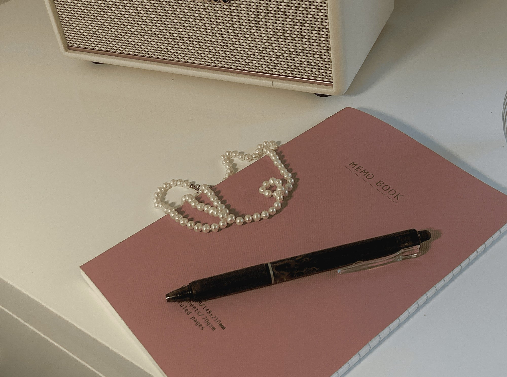
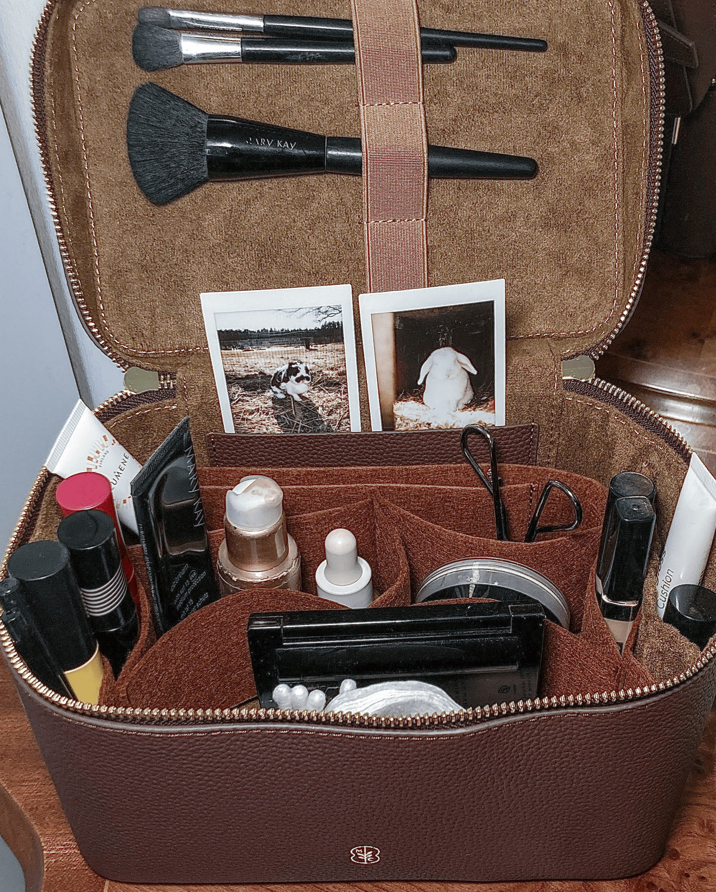
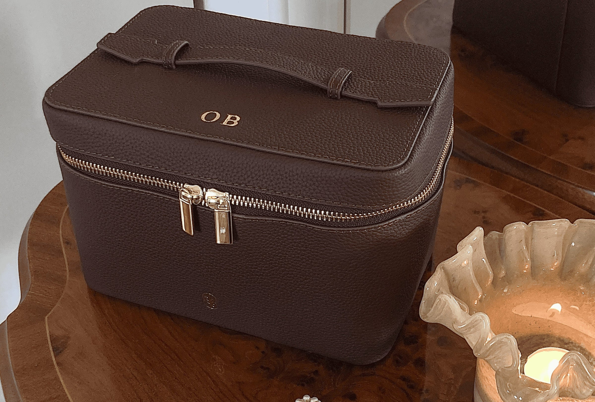

Olivia
Lidköping, Sweden — Writer"Kindness is the key to life itself."
Olivia Berg moves through the world softly and deliberately. She is twenty-something, studying to become a teacher from her family home in Lidköping, Sweden — a choice she describes simply as self-love. Her vanity sits somewhere near her books, her diary, and photographs of her bunnies. She is kind in the way that takes courage.
Le Sanctuaire
What's always on your shelf, no matter what?On my shelf is always my book. Reading, especially fantasy, is a big and important part of my life. A way for me to go on adventures, living hundreds of different lives. It is also a way for me to connect with myself on a deeper level, since you learn so much about yourself by reading. But the most important thing reading is to me, is that I can step into my own imaginary world, which makes the rest of the world pause. No matter what I am going through, or what is happening in the world around me, I can always step into the world of my imagination. Into the world that is only my own, my own sanctuary.
L'identité
Three words the women who know you would use. Three words you'd use for yourself.Kind. Loving. Creative. Both, the people around me would use the same words I'd use for myself. So let me go deeper into each one.
Kind. Kindness is an incredibly underrated trait. I feel like it can often be mistaken for weakness. But true kindness is one of the most powerful things a person can have. Kindness to yourself, to the world around you, to humanity, to nature, to life. Kindness is the key to love, peace, and true beauty.
Loving. I am a person who loves. I feel everything deeply and greet life with love. And when I say that, I do not mean everything is perfect — it is far from. But by choosing love every day, the world around you shifts.
Creative. I love everything from singing, acting, crafting, painting, writing, to coming up with stories and poems. It is not the results that matter — it is the journey. That you do it because you love it. Because it makes your heart sing. Because it makes you feel like you.
Le Deuxième Cerveau
Is there something you carry with you everywhere — something small, maybe insignificant to others — that you'd never leave behind? What is it, and where did it come from?My diary is never far away, since it literally is my second brain. Everything from to-do lists, to poems, me simping over fictional characters, brain dumps, existential questions, writings about my day, cursive writing practice, pressed flowers, random drawings, and so much more. There I can ramble about anything and everything, for as long or as short as I want to. I have been writing diaries since I was a kid, so my diaries are literally my brain and my life printed on paper.

Le Chapitre Actuel
What does your life look like right now — and what does it feel like? You don't have to make it sound beautiful. Just make it honest.Right now I am studying to become a teacher. Actually I am doing online university. Even though I miss out on some things around uni life, being an online student is really a choice out of self love, a choice from prioritising myself. I love my home and my family, and being able to spend a few more years here is so valuable to me. Four words I would describe my life as right now: Intentional. Soft. Beautiful. Me.
This past year I have started to connect to myself and life on a deeper level. I am for example diving deeper into what I have always wanted to do — to share my voice and inspire others. I am planning to start a YouTube channel, where I want to inspire young women to live a healthy and peaceful life that is aligned with who they are. I am a sensitive person. I see this as a gift since that makes me feel life and the world deeper — all the beauty of life. But with sensitivity also comes pain, anxiety, stress, and worrying. But the more I embrace my sensitivity, the easier it gets to handle and understand the difficult feelings. Embracing the sensitive person who I am means feeling a lot of pain, but more importantly feeling unlimited love, and the feeling of coming home to myself. It is like a superpower — a way for me to live deeper, to connect with my life and with life. I am finding more peace. I am starting to understand that whisper inside of me, and thanks to that I am living in more alignment with who I am and what I value in life.
L'Intérieur
Open your vanity. Tell us everything that's inside. What does it say about you?In my vanity are basically the only makeup products I own. I love doing my makeup, but nowadays I only put on makeup a couple of times a month. Since I have started connecting more to myself and living a life that feels aligned with who I am, I have realised that the most beautiful version of me is the real and natural me — without makeup. But that does not mean that I always feel 100% comfortable without makeup, but I have come a long way since I started this journey. My self love has increased and I feel more connected to myself and my natural beauty. So when I do my makeup, it is not to cover something or to make me more beautiful — it is simply for the reason that I like doing my makeup. With that said, I own a few, but good quality makeup products that make me feel like me. Products that enhance my beauty, and not cover it.
In my vanity I also have photos of my dear bunnies. Every time I open the vanity and see the photos, my heart flutters with joy and it always puts a smile on my lips. I am reminded that there is so much love around me, and that I shall never take the ones I love for granted. These little souls fill my life with so much love and beauty, and therefore they are an important part of my vanity — they remind me of what actually matters in life: love, connections, and thankfulness.

Sa vanité.
Coloris Mocha. Initiales O.B
Inside: three brushes, a lip stain, a compact, a small mirror. Two Instax photographs of her bunnies, tucked into the lid. Every time she opens it, her heart flutters. She is reminded of what actually matters — love, connections, and thankfulness.
Chaque vanité raconte quelque chose. La sienne raconte une femme qui sait exactement ce dont elle a besoin.

La vôtre commence ici.
Choisissez votre cuir. Choisissez vos initiales. Faites-en la vôtre.
Personnaliser ma vanité →